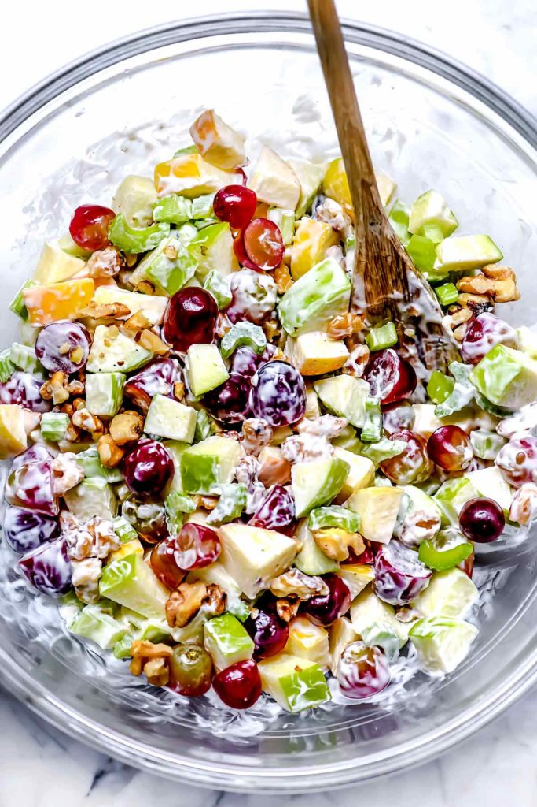

Classic Waldorf Salad

Description
Crunchy with crisp apples, celery and toasted nuts, this easy Waldorf salad is a classic
recipe perfect for a crowd any time of year.
Ingredients
- 2 cups diced tart apples, or 2 apples
- 1 tablespoon sugar
- 2 teaspoons lemon juice
- 1 cup diced celery
- 1 cup grapes, halved
- 1/2 cup toasted walnuts or pecans, roughly chopped
- 1/2 cup whipping cream, whipped
- 1/4 cup mayonnaise
- 1/2 teaspoon kosher salt
Steps
-
Add the diced apples to a large mixing bowl and sprinkle with the sugar and lemon juice.
Toss to coat. Add the celery, grapes, and nuts.
-
In another bowl, whip the whipping cream until peaks form, then gently fold in the
mayonnaise. Fold into the apple mixture and season with the kosher salt. Taste and adjust
the seasoning to your liking. Chill for 1 hour or overnight. Serve by itself or on a lettuce
leaf.
Notes
Instead of whipping cream, substitute 2 tablespoons plain Greek yogurt or sour cream.
All credits go to
FoodieCrush.